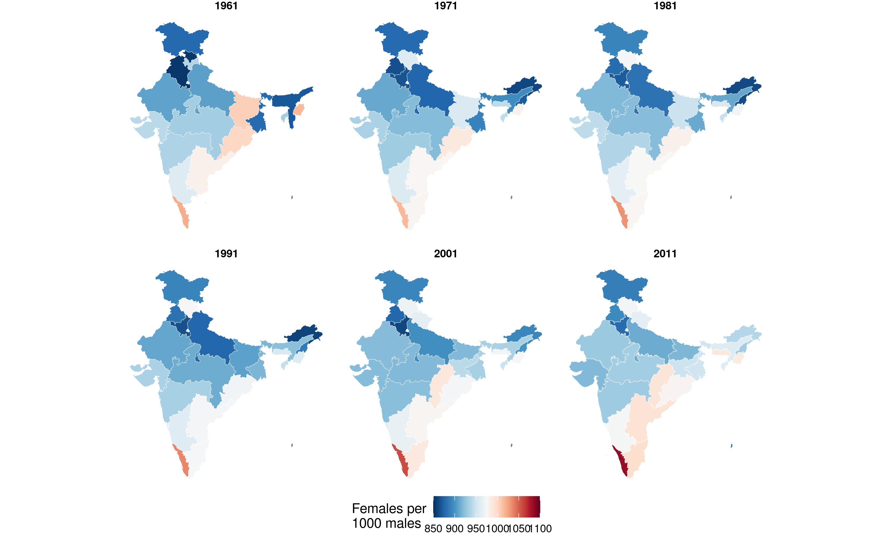
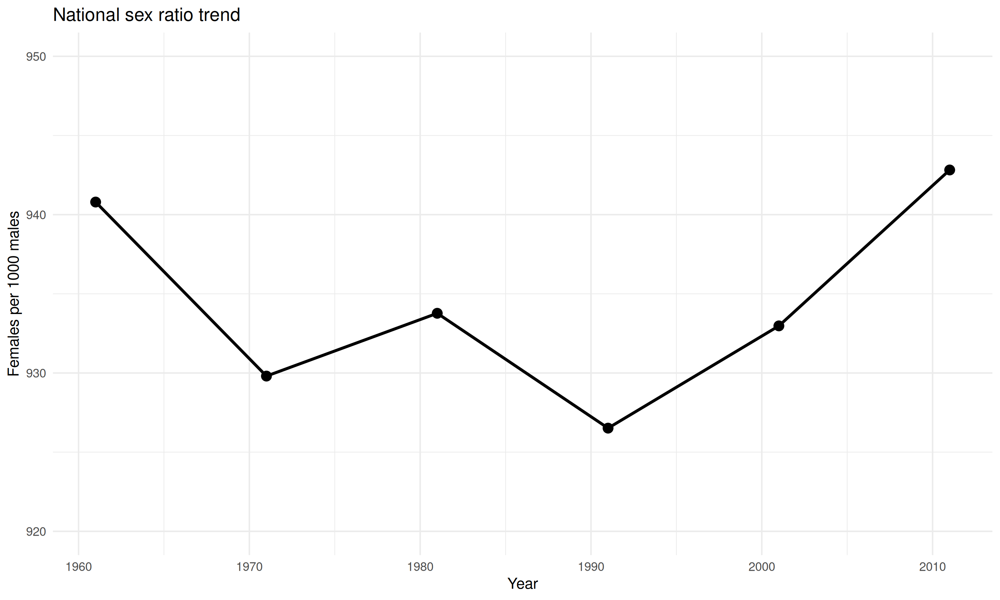
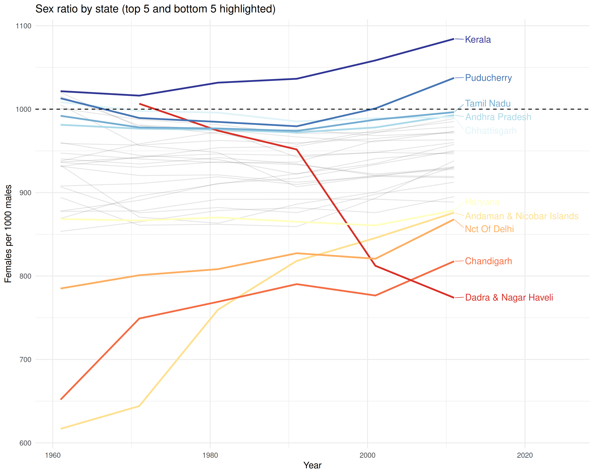
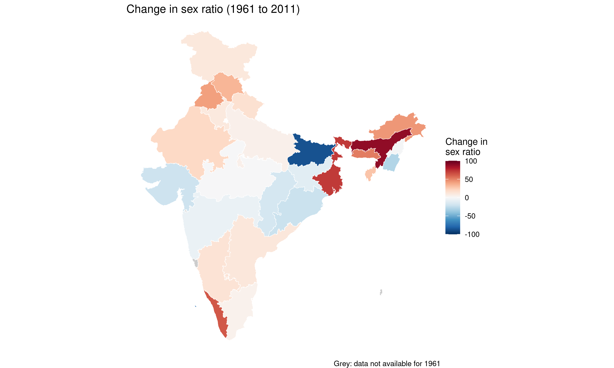

Sex ratio across decades
Sex ratio in India is conventionally expressed as females per 1000 males. A ratio below 1000 indicates a male-skewed population.
years <- c(1961, 1971, 1981, 1991, 2001, 2011)
pop_geo <- lapply(years, function(y) {
census_population_time_series |>
filter(geography == "state", year == y) |>
mutate(sex_ratio = 1000 * females / males) |>
attach_geometry(year = y, geography = "state")
}) |> bind_rows()
ggplot(pop_geo) +
geom_sf(aes(fill = sex_ratio), color = "white", linewidth = 0.1) +
scale_fill_gradientn(
colors = get_palette("blue_red"),
name = "Females per\n1000 males",
limits = c(850, 1100)
) +
facet_wrap(~year, nrow = 2) +
theme_void() +
theme(strip.text = element_text(face = "bold"), legend.position = "bottom")
National trend
national <- census_population_time_series |>
filter(geography == "state", year %in% years) |>
group_by(year) |>
summarise(males = sum(males, na.rm = TRUE), females = sum(females, na.rm = TRUE)) |>
mutate(sex_ratio = 1000 * females / males)
ggplot(national, aes(year, sex_ratio)) +
geom_line(linewidth = 1) +
geom_point(size = 3) +
geom_hline(yintercept = 1000, linetype = "dashed", color = "gray50") +
scale_y_continuous(limits = c(920, 950)) +
labs(x = "Year", y = "Females per 1000 males", title = "National sex ratio trend") +
theme_minimal()
State-level trends
state_trends <- census_population_time_series |>
filter(geography == "state", year %in% years) |>
mutate(sex_ratio = 1000 * females / males)
# Identify top 5 and bottom 5 by 2011 sex ratio
extremes_2011 <- state_trends |>
filter(year == 2011) |>
arrange(sex_ratio)
bottom_5 <- extremes_2011 |>
slice_head(n = 5) |>
pull(state_name_harmonized)
top_5 <- extremes_2011 |>
slice_tail(n = 5) |>
pull(state_name_harmonized)
# Color palette: blues/teals for high ratios (positive), reds/oranges for low (concerning)
state_colors <- c(
# Bottom 5 (low sex ratio) - warm colors indicating concern
setNames(c("#d73027", "#f46d43", "#fdae61", "#fee090", "#ffffbf"), bottom_5),
# Top 5 (high sex ratio) - cool colors indicating balance
setNames(c("#e0f3f8", "#abd9e9", "#74add1", "#4575b4", "#313695"), top_5)
)
state_trends <- state_trends |>
mutate(
highlight = state_name_harmonized %in% c(bottom_5, top_5),
label = ifelse(year == 2011 & highlight, state_name_harmonized, NA)
)
ggplot(state_trends, aes(year, sex_ratio, group = state_name_harmonized)) +
geom_line(data = filter(state_trends, !highlight), alpha = 0.2, color = "gray50") +
geom_line(data = filter(state_trends, highlight), aes(color = state_name_harmonized), linewidth = 1) +
geom_text_repel(
aes(label = label, color = state_name_harmonized),
direction = "y",
xlim = c(2012, NA),
hjust = 0,
segment.size = 0.3,
na.rm = TRUE
) +
geom_hline(yintercept = 1000, linetype = "dashed", color = "black") +
scale_color_manual(values = state_colors) +
scale_x_continuous(limits = c(1961, 2025)) +
labs(x = "Year", y = "Females per 1000 males", title = "Sex ratio by state (top 5 and bottom 5 highlighted)") +
theme_minimal() +
theme(legend.position = "none")
Highest and lowest sex ratios (2011)
pop_2011 <- census_population_time_series |>
filter(geography == "state", year == 2011) |>
mutate(sex_ratio = round(1000 * females / males)) |>
arrange(desc(sex_ratio))
cat("Highest sex ratio (2011):\n")
#> Highest sex ratio (2011):
head(pop_2011 |> select(state_name_harmonized, sex_ratio), 5)
#> # A tibble: 5 × 2
#> state_name_harmonized sex_ratio
#> <chr> <dbl>
#> 1 Kerala 1084
#> 2 Puducherry 1037
#> 3 Tamil Nadu 996
#> 4 Andhra Pradesh 993
#> 5 Chhattisgarh 991
cat("\nLowest sex ratio (2011):\n")
#>
#> Lowest sex ratio (2011):
tail(pop_2011 |> select(state_name_harmonized, sex_ratio), 5)
#> # A tibble: 5 × 2
#> state_name_harmonized sex_ratio
#> <chr> <dbl>
#> 1 Haryana 879
#> 2 Andaman & Nicobar Islands 876
#> 3 Nct Of Delhi 868
#> 4 Chandigarh 818
#> 5 Dadra & Nagar Haveli 774Change from 1961 to 2011
change_data <- census_population_time_series |>
filter(geography == "state", year %in% c(1961, 2011)) |>
mutate(sex_ratio = 1000 * females / males) |>
select(state_name_harmonized, state_name_harmonized, year, sex_ratio) |>
tidyr::pivot_wider(names_from = year, values_from = sex_ratio, names_prefix = "y") |>
mutate(change = y2011 - y1961) |>
attach_geometry(year = 2011, geography = "state")
ggplot(change_data) +
geom_sf(aes(fill = change), color = "white", linewidth = 0.2) +
scale_fill_gradientn(
colors = get_palette("blue_red"),
name = "Change in\nsex ratio",
limits = c(-100, 100),
na.value = "grey80"
) +
labs(
title = "Change in sex ratio (1961 to 2011)",
caption = "Grey: data not available for 1961"
) +
theme_void() +
theme(legend.position = "right")